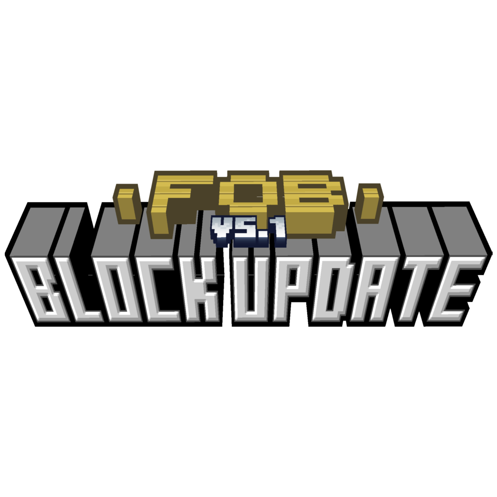
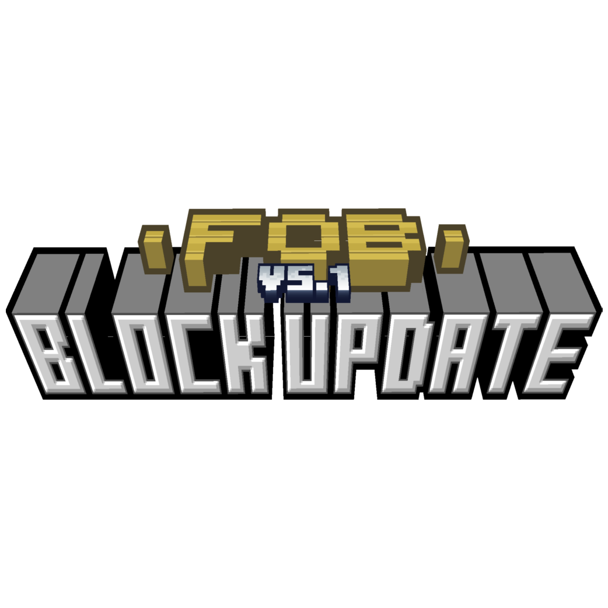
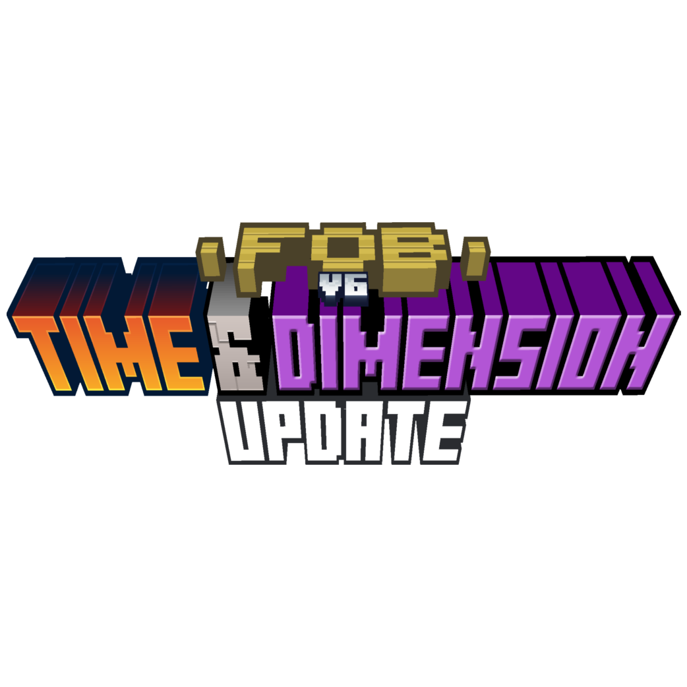
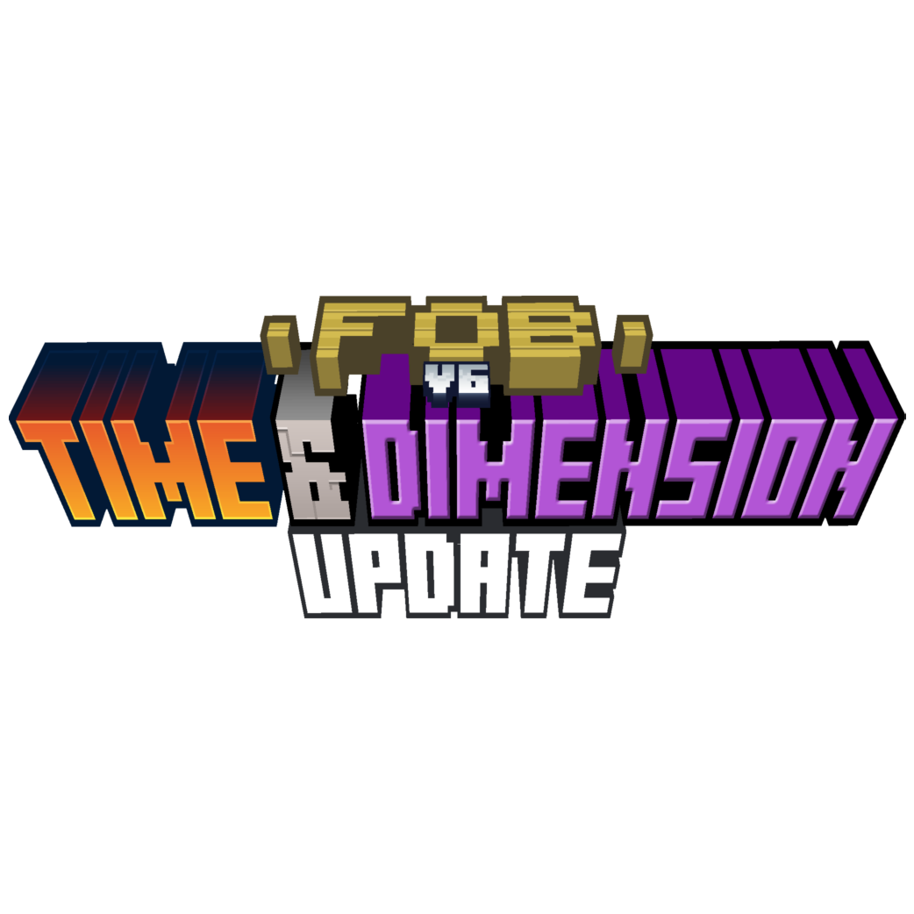

Toutes les infos sur FOB V4 | TNT Update - Phase 1 sont situés juste en dessous


 

 

A propos de FOB V4 - TNT Update | Phase 1
La TNT Update est officiellement sortie le 20 Novembre 2021, donc assez peu de temps après la Fruit Update. Comme son nom l'indique, elle ajoute plusieurs voir mêmme beaucoup de nouvelles TNT. Les TNT sont la TNT Jolan, la TNT Verte et la Jaune, plus les TNT de tous les minerais de FOB. Au total, cela fait un total de 15 nouvelles TNT, mais, il y a aussi l'arrivée d'un tout nouveau minerai, il s'agit de l'Enderite, premier minerai du mod à apparaître dans une autre dimension que l'Overworld.